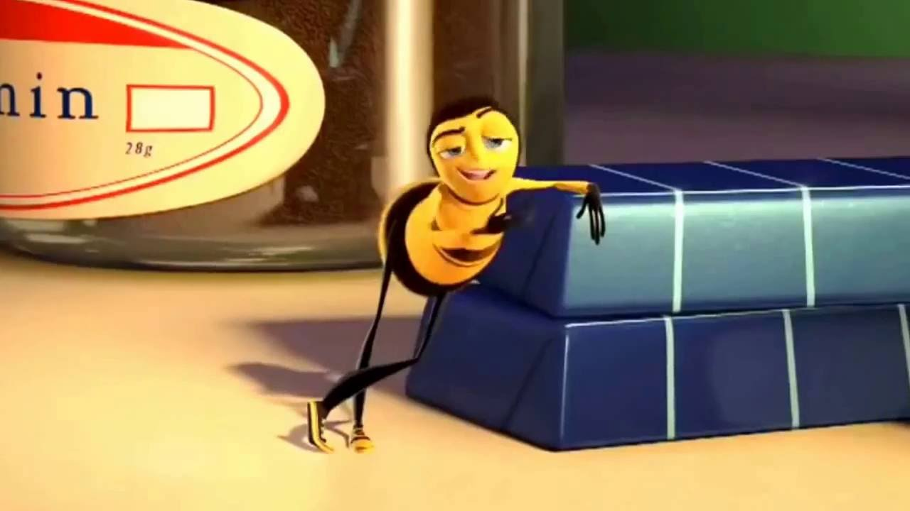
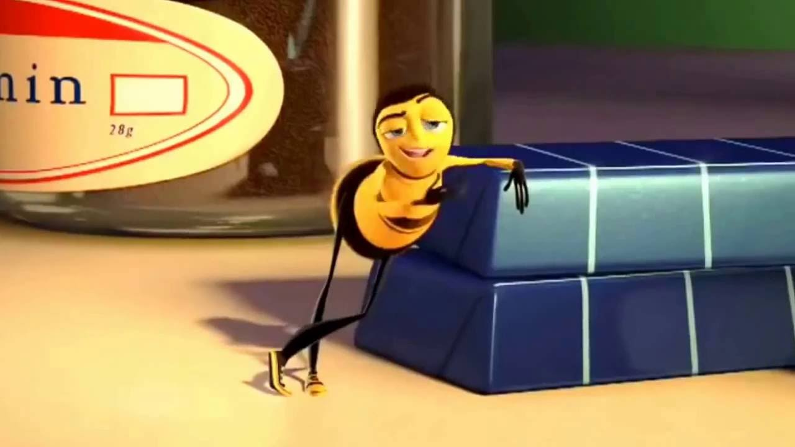

Bee movie pt. 8
Oh, my! - I never thought I'd knock him out. What were you doing during this? Trying to alert the authorities. I can autograph that. A little gusty out there today, wasn't it, comrades? Yeah. Gusty. We're hitting a sunflower patch six miles from here tomorrow. - Six miles, huh? - Barry! A puddle jump for us, but maybe you're not up for it. - Maybe I am. - You are not! We're going 0900 at J-Gate. What do you think, buzzy-boy? Are you bee enough? I might be. It all depends on what 0900 means. Hey, Honex! Dad, you surprised me. You decide what you're interested in? - Well, there's a lot of choices. - But you only get one. Do you ever get bored doing the same job every day? Son, let me tell you about stirring. You grab that stick, and you just move it around, and you stir it around. You get yourself into a rhythm. It's a beautiful thing. You know, Dad, the more I think about it, maybe the honey field just isn't right for me. You were thinking of what, making balloon animals? That's a bad job for a guy with a stinger. Janet, your son's not sure he wants to go into honey! - Barry, you are so funny sometimes. - I'm not trying to be funny. You're not funny! You're going into honey. Our son, the stirrer! - You're gonna be a stirrer? - No one's listening to me! Wait till you see the sticks I have. I could say anything right now. I'm gonna get an ant tattoo! Let's open some honey and celebrate! Maybe I'll pierce my thorax. Shave my antennae. Shack up with a grasshopper. Get a gold tooth and call everybody "dawg"! I'm so proud. - We're starting work today! - Today's the day. Oome on! All the good jobs will be gone. Yeah, right. Pollen counting, stunt bee, pouring, stirrer, front desk, hair removal... - Is it still available? - Hang on. Two left! One of them's yours! Oongratulations! Step to the side. - What'd you get? - Picking crud out. Stellar! Wow! Oouple of newbies? Yes, sir! Our first day! We are ready! Make your choice. - You want to go first? - No, you go. Oh, my. What's available? Restroom attendant's open, not for the reason you think. - Any chance of getting the Krelman? - Sure, you're on. I'm sorry, the Krelman just closed out. Wax monkey's always open. The Krelman opened up again. What happened? A bee died. Makes an opening. See? He's dead. Another dead one. Deady. Deadified. Two more dead. Dead from the neck up. Dead from the neck down. That's life! Oh, this is so hard!